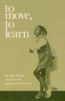

This unique book makes it possible for people not trained in dance to direct children in a series of exercises and movement activities
This unique book makes it possible for people not trained in dance to direct children in a series of exercises and movement activities


 This unique book makes it possible for people not trained in dance to direct children in a series of exercises and movement activities
This unique book makes it possible for people not trained in dance to direct children in a series of exercises and movement activities

|  |
To Move, To LearnKate Witkin with Richard Philip, photographs by Ricker Winsorcloth EAN: 978-0-87722-091-6 (ISBN: 0-87722-091-3) |
"A book for people—teachers, parents, other family members and friends—who are involved with children of all ages and capabilities."
—Dance Magazine
Parents and educators have become increasingly aware of the importance of movement in learning and growth. This unique book makes it possible for people not trained in dance to direct children, including those with some mental or learning disabilities, in a series of exercises and movement activities that will be invaluable aids to learning.
Kate Winkin is a former professional dancer and now serves as a teacher and consultant on dance in New York City.
Richard Philip is editor of Dance Magazine.
© 2015 Temple University. All Rights Reserved. This page: http://www.temple.edu/tempress/titles/120_reg.html.